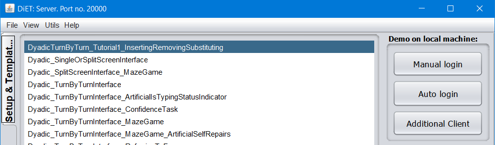

Tutorials¶
From a programming perspective, there are, broadly speaking, seven different types of experiment:
Interventions that intercept a turn and insert additional text into the turn.
Interventions that intercept a turn and remove text from the turn.
Interventions that intercept and modify text from a participant’s turn.
Interventions that intercept turns and do not relay them to other participants (i.e. “shadowbanning”).
Interventions that intercept turns and spoof the origin of the turn - e.g. making a turn produced by participant A appear to be produced by participant B.
Interventions that compose artificial turns that appear to a recipient as if they were produced by another participant.
Interventions that modify the timing of participants’ turns.
Interventions that assign participants to different groups (e.g. to different subcommunities).
Interventions that modify features of the chat interface (E.g. size, colour), etc.
Of course - some experiments might involve multiple types of intervention - e.g. manipulating the timing and apparent identity of participants’ turns.
Important: All the tutorials below only require you to modify code in your ConversationController object. Most/all of the methods you will call are in the diet.server.Conversation. The same applies when you program your own interventions - the chattool is designed so you only have to worry about the ConversationController object. The rest is taken care of in the chattool.
Tutorial1 - Inserting, removing, substituting text in participants’ turns¶
This is a toy setup which randomly adds smiley emoticons to participants’ turns - without participants realizing it!
To keep this tutorial simple, this experiment assumes you will be running experiments with two participants.
For this experiment we will use the Turn By Turn Interface. To use this interface in a new experiment you need to create a subclass of it.
Create a copy of diet.server.ConversationController.DyadicTurnByTurn_Tutorial1_InsertingRemovingSubstituting and call it DyadicTurnByTurn_Tutorial1_InsertingRemovingSubstituting. You can do this automatically in netbeans by right-clicking Dyadic_TurnByTurnInterface, selecting “Refactor” , then selecting “Copy” and entering “DyadicTurnByTurn_Tutorial1_InsertingRemovingSubstituting” as the new name. Make sure the destination package is diet.server.ConversationController.
Make sure that your ConversationController object has:
public static boolean showcCONGUI(){
return true;
}
This will make sure that the ConversationController object is displayed in the GUI window of the server. Select “Run project” to start the server GUI. You should see the newly created conversationcontroller object in the GUI.
Press the “Auto login” button. This should run the intervention and start two clients. Confirm that participants can send each other text.
Now we can program the intervention. The ConversationController object has a whole set of methods for determining who sees what.
First, let’s add a welcome message for the participants, and an instruction to start when both participants log in:
public synchronized void participantJoinedConversation(final Participant p) {
super.participantJoinedConversation(p); //Keep this in your code - to assign participants to groups and ensure they see each other's typing notification.
if(c.getNoOfParticipants()==1){
c.sendInstructionToParticipant(p,"Hello! Please wait for the other participant to log in");
}
else if (c.getNoOfParticipants()==2){
c.sendInstructionToMultipleParticipants(c.getParticipants().getAllParticipants(), "Please start!");
}
}
Inserting text in participants’ turns.¶
To create the intervention that manipulates the text, customize the processChatText(...) method. Before modifying it, the code looks like this.
1 2 3 4 | public synchronized void processChatText(Participant sender, MessageChatTextFromClient mct){
itnt.processTurnSentByClient(sender);
c.relayTurnToPermittedParticipants(sender, mct);
}
|
This code does two things. Line 2 takes care of the typing status messages: This code sends instructions to all the participants other than sender, instructing them to stop displaying the “participant X” is typing status message. Line 3 sends the message from the sender to all the other participants.
To create the intervention, the ConversationController needs to intercept the incoming turn and add an emoticon to it. Change processChatText(..) to
1 2 3 4 5 6 7 8 9 10 11 12 13 | Random r = new Random();
public synchronized void processChatText(Participant sender, MessageChatTextFromClient mct){
itnt.processTurnSentByClient(sender);
if(r.nextBoolean()){
String turn = mct.getText() + " :)" ;
Vector recipients = pp.getRecipients(sender);
c.sendArtificialTurnFromApparentOriginToRecipients(sender, recipients, turn);
}
else{
c.relayTurnToPermittedParticipants(sender, mct);
}
}
|
This code randomly chooses whether to perform the intervention or not. Line 6 extracts the original turn from the MessageChatText message and uses it to construct the new message with a smiley emoticon “:)” appended to it. Line 7 retrieves the list of participants who receive the turn (in this case it is only one participant). Line 8 sends the artificial turn. Line 8 is important because it does two things: (1) It sends the artificial message to the other participant(s) (2) It ensures that the correct information is saved in the output file “turns.txt. To illustrate this, consider the following table from “turns.txt” in the output folder:

This corresponds to a dialogue between two participants. The first participant has ID LLLL3 and username LLLL3. The second participant has ID RRRR4 and username RRRR4. They had the following dialogue:
LLLL3: Hello
RRRR4: Hi
LLLL3: How are you?
RRRR4: I am great
LLLL3: great
Where turns 1 and 4 were artificially modified by the server. Notice how, although the dialogue has 5 turns, there are 7 rows of data in the output. This is because whenever a turn is not relayed to all participants, the server automatically saves it as an “intercepted turn” (see column D - Turntype, in the spreadsheet). Look at the first row of data in the spreadsheet. Notice how the intercepted turn has “server” as the sole recipient. Notice also how the modified turn is saved as an “artificial turn”(see column D - Turntype). This “artificialturn” is sent from the server (column E), but the ApparentSender (column G) is LLLL3.
Removing text from participants’ turns¶
Suppose, instead that you want to write code that removes all unhappy emoticons “:(” from participants’ turns. This can be done by adding one more line to the code from the previous example:
1 2 3 4 5 6 7 8 9 10 11 12 13 14 | public synchronized void processChatText(Participant sender, MessageChatTextFromClient mct){
itnt.processTurnSentByClient(sender);
String turn = mct.getText();
if(turn.contains(":(")) {
turn = turn.replace(":(", "");
Vector recipients = pp.getRecipients(sender);
c.sendArtificialTurnFromApparentOriginToParticipants(sender, recipients, turn);
}
else{
c.relayTurnToPermittedParticipants(sender, mct);
}
}
|
Modifying text from participants’ turns¶
Suppose, instead that you want to write code that replaces all instances of the word “sad” with “happy”. The code for doing this is almost exactly the same as the previous example:
1 2 3 4 5 6 7 8 9 10 11 12 13 14 | public synchronized void processChatText(Participant sender, MessageChatTextFromClient mct){
itnt.processTurnSentByClient(sender);
String turn = mct.getText();
if(turn.contains(":(")) {
turn = turn.replace("sad", "happy");
Vector recipients = pp.getRecipients(sender);
c.sendArtificialTurnFromApparentOriginToParticipants(sender, recipients, turn);
}
else{
c.relayTurnToPermittedParticipants(sender, mct);
}
}
|
Blocking entire turns (shadowbanning)¶
Suppose, instead that you want to write code that blocks any turn that contains the word “sad”.
1 2 3 4 5 6 7 8 9 10 11 12 | public synchronized void processChatText(Participant sender, MessageChatTextFromClient mct){
String turn = mct.getText();
if(!turn.contains("sad")) {
itnt.processTurnSentByClient(sender);
c.relayTurnToPermittedParticipants(sender, mct);
}
else{
}
}
|
Extending the code¶
The techniques in this tutorial can be chained together to program interventions where participants engage in short sequences of interaction with the server that is spoofing their conversational partner.
Tutorial2 - Multiparty interaction: Spoofing identities¶
This experiment involves a setup with three participants: A, B, C. Participant A randomly sees messages from B appear as posts from C.
Before running this tutorial, make sure you have carried out tutorial 1 (i.e. that you know how to create your own subclass of DefaultConversationController,, and start it).
First, create a new ConversationController class called DyadicTurnByTurn_Tutorial2_MultipartyInteraction (following the same steps in tutorial 1).
In order to make the GUI automatically start 3 participants, instead of two, chnage the associated parameter sett.login_numberOfParticipants = 3; in the constructor of the ConversationController:
1 2 3 4 5 6 7 8 9 10 11 12 13 14 | public DyadicTurnByTurn_Tutorial2_MultipartyInteraction(Conversation c) {
super(c);
String portNumberOfServer = ""+ConnectionListener.staticGetPortNumber();
this.setID("Dyadic");
this.experimentHasStarted=true;
sett.login_numberOfParticipants = 3;
}
public DyadicTurnByTurn_Tutorial2_MultipartyInteraction(Conversation c, long istypingtimeout) {
super(c,istypingtimeout);
String portNumberOfServer = ""+ConnectionListener.staticGetPortNumber();
this.setID("Dyadic");
this.experimentHasStarted=true;
sett.login_numberOfParticipants = 3;
}
|
First it needs to be changed to assign participants to conversations of 3 participants. This can be done in the participantJoinedConversation(..)
1 2 3 4 5 6 7 8 9 10 11 12 13 14 | Participant pA,pB,pC;
public synchronized void participantJoinedConversation(final Participant p) {
// super.participantJoinedConversation(p);
Vector allP = c.getAllParticipantsAsList();
if(c.getNoOfParticipants()==1)pA=p;
else if(c.getNoOfParticipants()==2)pB=p;
else if(c.getNoOfParticipants()==3)pC=p;
if(allP.size()==3){
pp.createNewSubdialogue(allP);
}
}
|
Notice how Line 4 is commented out (this is because the default functionality is dyadic groups). Line 4 checks how many participants are currently logged in. Lines 7,8,9 assign participants to particular roles. In this experiment, pA will be the one receiving the spoof turns. (In a proper experiment you would do this randomly or based on participants’ IDs) If there are 3 participants, they are assigned to a new group (Line 11).
The code below performs the manipulation. The way it works is that the first 10 turns of the dialogue proceed normally. After 10 turns participant A sees B’s turns as if they are produced by C. A sees C’s turns as if they are produced by B. B and C see each other’s turns veridically.
1 2 3 4 5 6 7 8 9 10 11 12 13 14 15 16 17 18 19 20 21 22 | long msgcount=0;
boolean doSwap = true;
public synchronized void processChatText(Participant sender, MessageChatTextFromClient mct){
msgcount++;
if(msgcount>10)doSwap=true;
if(!doSwap || sender ==pA){
itnt.processTurnSentByClient(sender);
c.relayTurnToPermittedParticipants(sender, mct);
return;
}
if(sender==pB ){
c.sendArtificialTurnFromApparentOrigin(pC, pA, mct.getText());
c.sendArtificialTurnFromApparentOrigin(pB, pC, mct.getText());
}
if(sender==pC ){
c.sendArtificialTurnFromApparentOrigin(pB, pA, mct.getText());
c.sendArtificialTurnFromApparentOrigin(pC, pB, mct.getText());
}
}
|
Tutorial3 - Manipulating the timing of turns¶
This is a simple add-on to the previous tutorial.
Suppose you want to delay Participant pA’s turns. This can be achieved using the Conversation.relayDELAYEDTurnToPermittedParticipants(...) method.
1 2 3 4 5 6 7 8 9 10 11 12 13 14 15 16 17 18 | public synchronized void processChatText(Participant sender, MessageChatTextFromClient mct){
msgcount++;
if(msgcount>10)doSwap=true;
if(!doSwap || sender ==pA){
itnt.processTurnSentByClient(sender);
c.relayDELAYEDTurnToPermittedParticipants(sender, mct, 3000);
return;
}
if(sender==pB ){
c.sendArtificialTurnFromApparentOrigin(pC, pA, mct.getText());
c.sendArtificialTurnFromApparentOrigin(pB, pC, mct.getText());
}
if(sender==pC ){
c.sendArtificialTurnFromApparentOrigin(pB, pA, mct.getText());
c.sendArtificialTurnFromApparentOrigin(pC, pB, mct.getText());
}
}
|
Tutorial4 - Linguistic subcommunities: Dynamically creating/mixing groups¶
Before running this tutorial, make sure you have carried out tutorial 1 (i.e. that you know how to create your own subclass of DefaultConversationController,, and start it).
This tutorial shows how to run an experiment with 8 participants (p1, p2, p3, p4, p5, p6, p7, p8) . Initially there are four pairs (p1,p2), (p3,p4) , (p5,p6), (p7,p8). After 10 turns, participants are then paired with another partner. (p1,p3), (p2,p4), (p5,p7), (p6,p8).
First, create a new ConversationController class called DyadicTurnByTurn_Tutorial2_MultipartyInteraction (following the same steps in tutorial 1).
Then, to assign participants to the correct dyad at login, do
1 2 3 4 5 6 7 8 9 10 11 12 13 14 15 16 17 18 19 | public synchronized void participantJoinedConversation(final Participant p) {
// super.participantJoinedConversation(p);
Vector<Participant> allP = c.getAllParticipantsAsList();
if(c.getNoOfParticipants()==8){
pp.createNewSubdialogue(allP.elementAt(0), allP.elementAt(1));
pp.createNewSubdialogue(allP.elementAt(2), allP.elementAt(3));
pp.createNewSubdialogue(allP.elementAt(4), allP.elementAt(5));
pp.createNewSubdialogue(allP.elementAt(6), allP.elementAt(7));
itnt.addPairWhoAreMutuallyInformedOfTyping(allP.elementAt(0), allP.elementAt(1));
itnt.addPairWhoAreMutuallyInformedOfTyping(allP.elementAt(2), allP.elementAt(3));
itnt.addPairWhoAreMutuallyInformedOfTyping(allP.elementAt(4), allP.elementAt(5));
itnt.addPairWhoAreMutuallyInformedOfTyping(allP.elementAt(6), allP.elementAt(7));
}
else{
c.sendInstructionToParticipant(p,"Please wait for other participants to login");
}
}
|
The code to reassign participants to different partners is almost identical:
1 2 3 4 5 6 7 8 9 10 11 12 13 14 15 16 17 | long msgcount=0;
public synchronized void processChatText(Participant sender, MessageChatTextFromClient mct){
msgcount++;
if(msgcount==10){
Vector<Participant> allP = c.getAllParticipantsAsList();
pp.createNewSubdialogue(allP.elementAt(0), allP.elementAt(2));
pp.createNewSubdialogue(allP.elementAt(1), allP.elementAt(3));
pp.createNewSubdialogue(allP.elementAt(4), allP.elementAt(6));
pp.createNewSubdialogue(allP.elementAt(5), allP.elementAt(7));
itnt.addPairWhoAreMutuallyInformedOfTyping(allP.elementAt(0), allP.elementAt(2));
itnt.addPairWhoAreMutuallyInformedOfTyping(allP.elementAt(1), allP.elementAt(3));
itnt.addPairWhoAreMutuallyInformedOfTyping(allP.elementAt(4), allP.elementAt(6));
itnt.addPairWhoAreMutuallyInformedOfTyping(allP.elementAt(5), allP.elementAt(7));
}
}
|
Note: This is a “toy” implementation, for illustrative purposes. It would be possible in this experiment for the “swap” to be triggered before all participants had sent a turn.
Tutorial5 -
In this tutorial you will learn how
Running a tangram game experiment with custom images.
Displaying stimuli on the clients /
Getting input from the users - public void showPopupOnClientQueryInfo
Displaying progress bars
N.B. If you are doing
Interacting with system? chatbot? /
How to save data to the file (save a data row) OR saving additionaal attribvals
WYSIWYG - adding random smileys to the WYSIWYG Interface